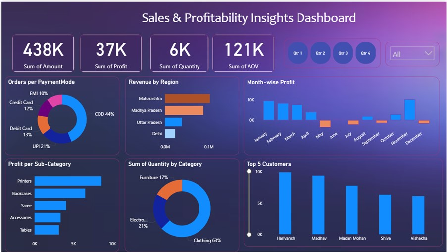

Certifications

Supply Chain Management

Scrum Master

Power BI

Lean Six Sigma
Supply Chain & Lifecycle professional supporting Philips Azurion image-guided therapy systems, driving end-of-life strategy, inventory optimisation, and financial risk management across global MedTech operations.
Supply Chain: EOL Strategy · Inventory Governance · Lifecycle Management
Analytics: SAP · Power BI · Forecast Modelling
Execution: S&OP · Working Capital · CAPA
Lifecycle Manager – EOL strategy, SAP-driven planning, inventory optimisation, Power BI analytics.
Supply Chain Intern – Designed NOK process improving operational stability by 96%.
Strategic Projects Lead – Procurement optimisation and analytics across APAC & MEA.
Supply Chain Management
Scrum Master
Power BI
Lean Six Sigma
Supply chain analytics dashboard for lifecycle visibility and inventory optimisation.
